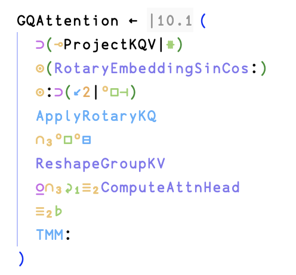
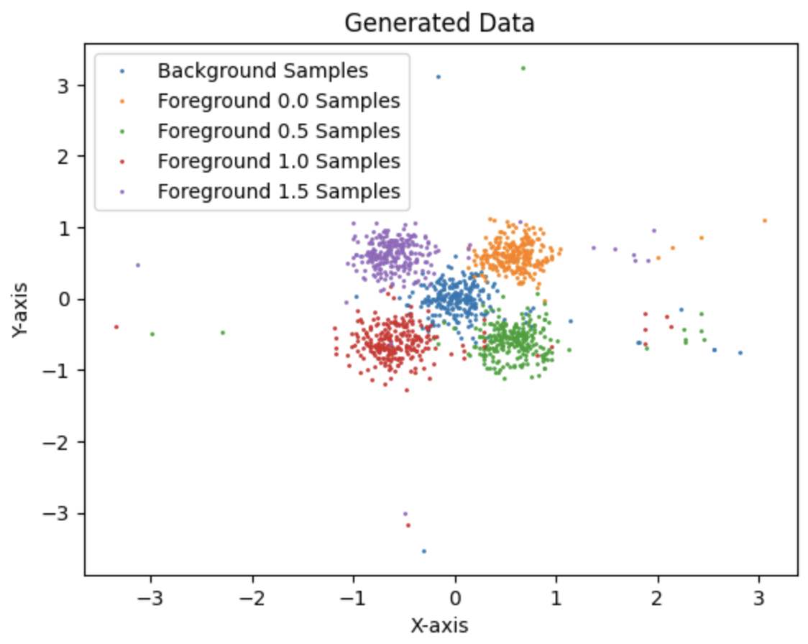
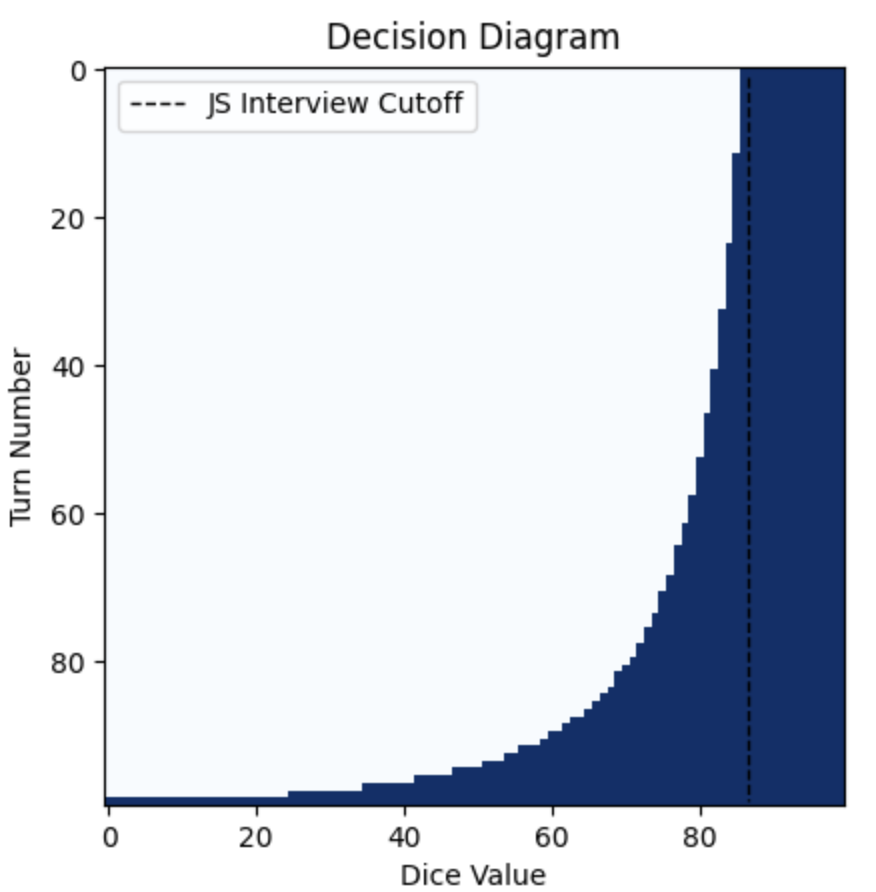
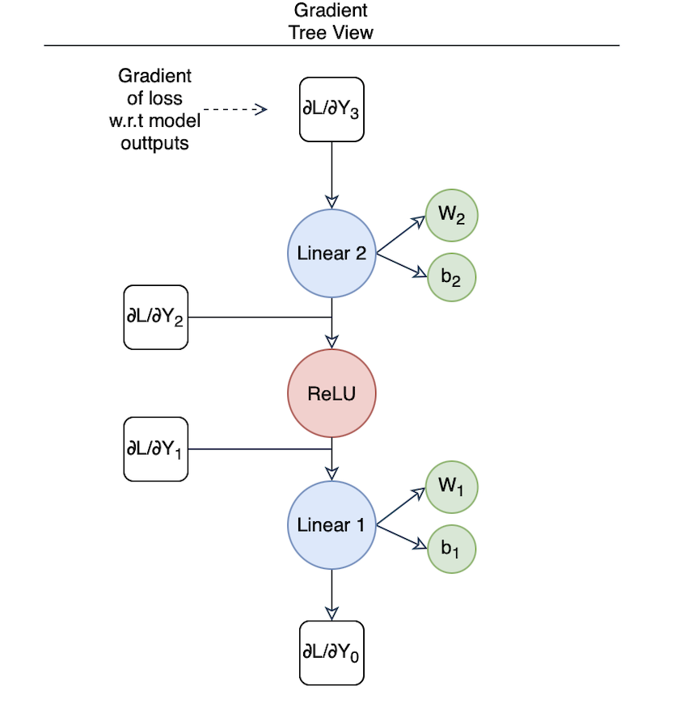
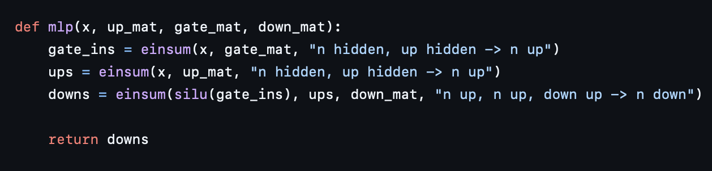

Maxim A. Khanov
B.S. Student in Computer Sciences
Computer Information Data Sciences
University of Wisconsin-Madison
mkhanov [at] wisc [dot] edu
CV / Google Scholar / Github

Uiua LLM
Uiua LLM is a complete rewrite of Qwen 2.5 in Uiua, a stack-based array-oriented programming language.
This includes a binary float16 parser which handles subnormal numbers, a grouped query attention (GQA) implementation, and rotary positional embedding implementation.

Generative Conditional Classifier
I was curious about: neural spline flows, generative modelling, and generative-classifiers so I decided to create a toy dataset and learn Pyro to perform generative classification on the generated dataset. I model the problem as a mixture distribution between a distribution with no parameters and another distribution which has one parameter. Firstly, a generative model (namely a conditional neural spline model) is learned, then to perform classification, the classes are first marginalized out and the class proportions and parameter of the second distribution are estimate, finally, using the iid nature of samples, we simply perform MLE to assign the most likely class.

Jane Street Correction
After watching a mock interview video from Jane Street on YouTube, I realized the participant solved a problem suboptimally so I decided to try and solve it as well as quantifying how much better my solution was.

UiNN
I wrote a small feed-forward neural netowork library in Uiua. In addition to the library, I thoroughly describe back-propagation.

Qwen Numpy
To better understand the modern architecture of LLMs, I decided to implement Qwen2.5 from scratch using only Numpy, and the amazing Einops library.